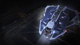

Top speed / boost
215 / 349 m/s
A legendary small-pad duellist and the value pick for pure combat. Two large hardpoints on a ferociously agile hull let it turn inside almost anything and dismantle ships far larger — it ranks high in the small bracket, held back only by a famously hungry power plant and shallow internals. Few ships are more fun per credit.

This ship's 1–100 suitability rating reflects its fully-engineered fit for this role, scored against every ship in the role. See how ships are rated.
The Vulture is Core Dynamics' pocket warship: a small, nimble hull built around two large hardpoints — a heavy main battery on a ship that turns like a fighter. Cheap, tough for its size and ferociously agile, it has been a beloved giant-killer for years, dismantling mediums and larger by simply out-turning them and landing two big guns over and over.
Its one enduring flaw is power. The Vulture's class-4 plant struggles to run two large weapons, shields and boost at once, so builds revolve around power priorities and efficient weapon choices. Manage that, and you have one of the most cost-effective combat ships in the game — a tiny predator that punches astonishingly hard from any outpost in the galaxy.
Agile small-pad duelling: RES bounty hunting, one-on-one fights against larger NPCs, and budget combat where out-turning the enemy and landing two large guns wins the day.
Four things make the Vulture a giant-killer:
The class-4 power plant is a constant constraint — running two large guns, shields and boost together demands careful power priorities and efficient weapons, or things shut off mid-fight. Only two guns and shallow internals also cap sustained damage and tanking. The Vulture rewards skill and discipline; flown carelessly, it stalls.
Both tables rate ships for the combat role specifically. The role column is the hardpoint loadout — the raw weapon mounts behind the damage.
| Ship | Class | Hardpoints | Pros & cons vs Vulture | Rating |
|---|---|---|---|---|
| Kestrel Mk II | Small | 3L 2S | Three large guns; more alpha; fasterThinner armour; far pricier | 85 |
| Vulture this | Small | 2L | — this hull (baseline) | 80 |
| Cobra Mk V | Small | 3M 2S | More guns, room and speed; deeper tankMedium guns, not large; less agile | 78 |
| Imperial Courier | Small | 3M | Faster; superb shields; cheaperMedium guns; paper hull | 70 |
| Viper Mk IV | Small | 2M 2S | Tough; cheap; forgivingLess firepower; less agile | 66 |
| Viper Mk III | Small | 2M 2S | Faster; very cheapFragile; less firepower | 63 |
| Diamondback Scout | Small | 2M 2S | Cool-running; four utilitiesFar less firepower | 60 |
| Eagle Mk II | Small | 3S | Even more agile; dirt cheapTiny guns; eggshell hull | 55 |
The Vulture is the value duelling pick of the small class. The Kestrel out-guns it and the Cobra Mk V is more flexible, but neither matches the Vulture's agility-per-credit. Manage its power and it dismantles ships far larger — the classic budget giant-killer.
| Ship | Class | Hardpoints | Pros & cons vs Vulture | Rating |
|---|---|---|---|---|
| Fer-de-Lance | Medium | 1H 4M | The medium duelling king; huge mount; no power issuesMedium pad; far pricier | 93 |
| Krait Mk II | Medium | 3L 2M | Big guns; SLF; deep tankMedium pad; far pricier | 90 |
| Alliance Chieftain | Medium | 2L 1M 3S | Agile tank; military slots; no power woesMedium pad; pricier | 88 |
| Kestrel Mk II | Small | 3L 2S | The small-pad firepower step-upThinner armour; pricier | 85 |
| Cobra Mk V | Small | 3M 2S | More versatile small-pad all-rounderLess alpha than two large guns | 78 |
When the Vulture's power and two-gun ceiling start to limit you, the natural step is the Fer-de-Lance — the medium duelling king with a huge mount and no power woes — or the Kestrel for more small-pad alpha. Until then, nothing duels harder per credit than the Vulture.
At ~4.7M Cr the Vulture is cheap, with no rank or permit gate, and its low rebuy means you can fly it aggressively without fear. Engineering focuses on the power plant and weapons — the keys to overcoming its one real weakness.
It's one of the best value-for-capability combat ships in the game: a few million credits buys a hull that, flown well, out-duels ships costing twenty times as much.
Under 5M credits for a hull that dismantles larger ships, with a low rebuy that rewards aggression. The Vulture is the classic 'first real combat ship' for pilots who like to duel.
An agile duelling fit built around two large guns and careful power management. Initial is buy-only; A-rated is the combat-ready baseline; Engineered applies the house combat pattern with an emphasis on efficient power.
| Slot | Initial · buy-only | A-Rated · no eng | Engineered | Notes |
|---|---|---|---|---|
| Hardpoints | ||||
| Large 1 | 3E Pulse Laser (Gimballed) | 3C Multi-Cannon (Gimballed) | G5 Overcharged + Corrosive Shell | Primary large mount; Overcharged multi-cannon with Corrosive Shell strips armour resistance so both guns hit harder. |
| Large 2 | 3E Pulse Laser (Gimballed) | 3C Beam Laser (Gimballed) | G5 Efficient + Thermal Vent | Second large mount; an Efficient beam with Thermal Vent strips shields while bleeding heat and easing the power load. |
| Utility Mounts | ||||
| Utility 1 | 0E Shield Booster | 0A Shield Booster | G5 Heavy Duty + Super Capacitors | First shield booster; Heavy Duty multiplies the bi-weave's raw MJ — the cheapest large gain in shield strength. |
| Utility 2 | — | 0A Shield Booster | G5 Heavy Duty + Super Capacitors | Second Heavy-Duty booster; diminishing returns set in but it still pays on a two-utility hull. |
| Utility 3 | — | 0I Chaff Launcher | G1 Ammo Capacity (no experimental effect) | Optional / low-priority — Ammo Capacity adds chaff salvos. Chaff spoils gimballed and turreted fire. |
| Utility 4 | — | 0I Heat Sink Launcher | G1 Ammo Capacity (no experimental effect) | Optional / low-priority — Ammo Capacity adds heat-sink charges. Dumps heat for silent running and Thermal-Vent resets. |
| Core Internals | ||||
| Power Plant | 4E Power Plant | 4A Power Plant | G5 Overcharged + Thermal Spread | The Vulture's chronic bottleneck — Overcharge it FIRST; Thermal Spread bleeds the extra heat the boost generates. |
| Thrusters | 5E Thrusters | 5A Thrusters | G5 Dirty Drive Tuning + Drag Drives | A-rated + Dirty Drives + Drag Drives preserve and sharpen the class-leading agility that wins the duel. |
| Frame Shift Drive | 4E Frame Shift Drive | 4A Frame Shift Drive | G3 Increased Range + Mass Manager | A-rated to reach RES sites and turn-ins; only G3 range — combat doesn't need a jump monster. |
| Life Support | 3E Life Support | 3D Life Support | G5 Lightweight (no experimental effect) | D-rate to save mass; Lightweight trims more — life support has no experimental effect. |
| Power Distributor | 5E Power Distributor | 5A Power Distributor | G5 Charge Enhanced + Super Conduits | A-rate this second; Charge Enhanced + Super Conduits sustain two large guns plus boost without browning out. |
| Sensors | 4E Sensors | 4D Sensors | G5 Lightweight (no experimental effect) | Drop to D and go Lightweight; combat needs no sensor range, so save the mass. |
| Fuel Tank | 3C Fuel Tank | 3C Fuel Tank | (No blueprint available) | Stock C-rated tank; fuel capacity is fixed and cannot be engineered. |
| Military Slots | ||||
| Military 1 | 5E Hull Reinforcement | 5D Hull Reinforcement | G5 Heavy Duty + Deep Plating | Heavy-Duty hull reinforcement in the military slot is the cheapest large multiplier on effective armour. |
| Optional Internals | ||||
| Size 5 | 5E Shield Generator | 5C Bi-Weave Shield Generator | G5 Reinforced + Fast Charge | Bi-weave regenerates fast for a duellist that re-engages; Reinforced maximises MJ and Fast Charge keeps regen quick. |
| Size 4 | 4E Cargo Rack | 4A Shield Cell Bank | G4 Specialised (no experimental effect) | Optional / low-priority — Specialised cuts the cell bank's heat and power spike. Burst shield healing for emergencies. |
| Size 2 | — | 2D Hull Reinforcement | G5 Heavy Duty + Deep Plating | More Heavy-Duty hull reinforcement; armour stacks linearly. |
| Size 1 | — | 1D Module Reinforcement | (No blueprint available) | Module Reinforcement spreads penetrating-hit damage across internals; not engineerable. |
| Size 1 | — | 1A Shield Cell Bank | G4 Specialised (no experimental effect) | Optional / low-priority — Specialised cuts the cell bank's heat and power spike. Burst shield healing for emergencies. |
| Size 1 | — | 1D Hull Reinforcement | G5 Heavy Duty + Deep Plating | Last Heavy-Duty hull reinforcement where the slot allows. |
| Size 1 | — | 1D Module Reinforcement | (No blueprint available) | Second Module Reinforcement protects the cores that keep you flying; not engineerable. |
The Vulture's class-4 plant can't run two large guns, shields and boost flat-out — Overcharge it, choose efficient weapons (one beam, one efficient multi-cannon), and set sensible power priorities so nothing critical drops mid-fight.
Buy the hull (~4.7M Cr) and fit a shield plus the military-slot reinforcement.
Arm both large mounts — start with one pulse and one multi-cannon to balance power draw while learning.
Set power priorities so weapons or shields don't brown out when you deploy hardpoints and boost.
A-rating priority for the Vulture — power first, always:
On the Vulture, power comes first — an Overcharged class-4 plant is the difference between two large guns that fire continuously and a ship that stalls in combat. Engineer it before weapons.
The house combat pattern with a hard focus on power. Pin blueprints for remote G1→G5 application; visit in person for experimentals.
| Module | Blueprint | Experimental | Engineer |
|---|---|---|---|
| Power Plant | Overcharged (G5) | Thermal Spread | Hera Tani / Marsha Hicks |
| Thrusters | Dirty Drive Tuning (G5) | Drag Drives | Professor Palin / Mel Brandon |
| Multi-Cannon | Overcharged (G5) | Corrosive Shell | Tod McQuinn |
| Beam Laser | Efficient (G5) | Thermal Vent | Broo Tarquin |
| Power Distributor | Charge Enhanced (G5) | Super Conduits | The Dweller |
| Bi-Weave Shield | Resistance Augmented (G5) | Fast Charge | Lei Cheung |
| Shield Boosters | Heavy Duty (G5) | Super Capacitors | Didi Vatermann |
| Hull Reinforcement | Heavy Duty (G5) | Deep Plating | Selene Jean |
Light-to-moderate — only two weapons plus core and shield G5s; cheap for the capability. The power-plant blueprint is the priority. With a complete inventory this is spend, not farm. Ask for exact per-blueprint counts if needed.
Approximate progression across the three states (figures are representative, not exact rolls):
| Stat | Initial | A-rated | Engineered |
|---|---|---|---|
| Top speed (boost) | 349 m/s | 349 m/s | ~430 m/s |
| Agility | elite | elite | elite |
| Shield (MJ) | ~380 | ~520 | ~950 |
| Sustained DPS | high | high | high (power-limited) |
| Power headroom | tight | tight | manageable |
Engineered — especially an Overcharged plant — the Vulture becomes a 430 m/s, 950 MJ predator that out-turns almost anything and lands two large guns at will. Power stays tight, but a good build keeps it manageable, and the agility is simply elite.
Any Haz RES near an outpost suits it. Around your home base, RES and massacre payouts double as Imperial-standing progress — and the small pad reaches outpost-only turn-ins.
The Vulture is the budget giant-killer: two large guns and elite agility on a cheap, small-pad hull that out-turns almost anything. Its hungry power plant is a real constraint and the skill ceiling is its own, but flown well it dismantles ships many times its price. A perennial favourite, and one of the most rewarding combat ships in the game.
Figures on this page are verified against the sources below.